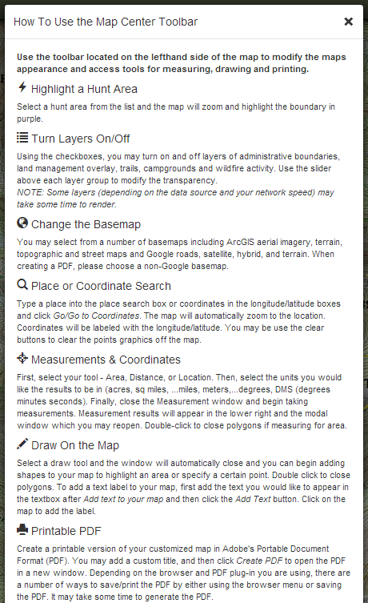

HOW TO...

The 'How To..." window will gives a brief overview of each of the tools. If you have any questions about the functionality of this application, this more in-depth help documentation is the place to start. If you have further questions don't hesitate to contact us.
Created with the Personal Edition of HelpNDoc: Single source CHM, PDF, DOC and HTML Help creation